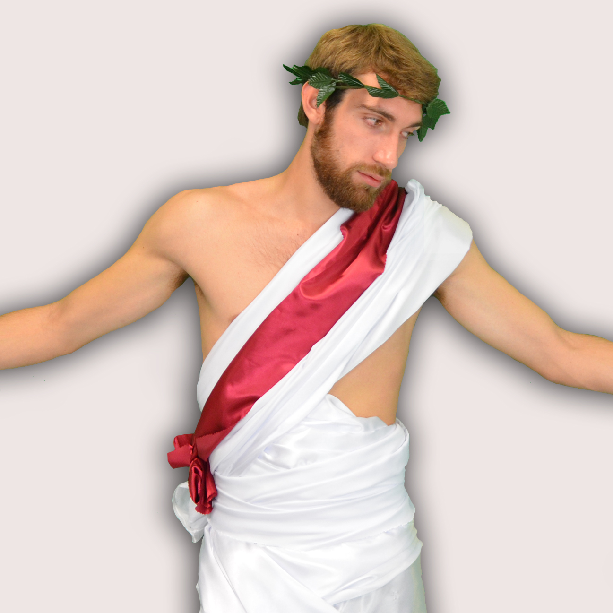

Les Sénateurs !

Guillaume , Empereur
Salut, moi c’est Guillaume ou CalmOlympius pendant ces deux semaines de campagne, surnom à l’image de mon sang froid lors de toutes épreuves ! Je viens d’avoir 22 ans, et vous me connaissez sûrement comme étant le président du club intégration cette année. J’aime beaucoup TELECOM Nancy que je rêvais de rejoindre depuis plusieurs années. C’est de là que je puise ma motivation et mon envie de m’investir dans la vie de l’école pour vous et les générations futures. Fort d’expériences après avoir vécu l’aventure côté club, c’est maintenant en temps que président du BDE que je me présente pour porter cette association et lui apporter sa flopée de nouvelles idées aux côtés de l’Impérialiste !

Philippe , Vice président
Fort d’une première expérience dans l’associatif au cours de mes 2 années de prépa TSI (RPZ) à Metz, j’ai la ferme volonté de m’engager, pour toi, dans le prochain BDE. En bizuth que je suis, le temps à consacrer aux tâches telles : qu’être aux côtés du Pres’ (oui un Pres’ sans son VP c’est comme Dora sans Babouche, Chaussea sans chaussures, Internet sans chatons) ; gérer l’équipe qui enverra du bifidus dans ta vie à Télécom, est large! J’ai participé à plusieurs réunions du bureau actuel afin de prendre le pouls pour mieux te servir et m’investir au max dès l’année prochaine!Allez! Il ne te reste qu’une chose à faire : voter Impérialiste!

Kilian , Trésorier
Yop ! Moi c'est Kilian aka Crésus, dois-je me présenter ? En bref, j'aime les #Hashtag, les DoMac de l'ambiance après les réunions, les pintes de Kastel Red du mardi et j'aime faire chier mon Guigui et mon Youri ! :D (j'aime les smiley aussi !)Plus sérieusement, après 1 an d'aventure à l'inté, j'ai pu découvrir les "sous", ces petits êtres vivants qui ont chacun une histoire (oui je suis pas tout seul dans ma tête) et on m'a dit qu'il y en avait tout plein à gérer au BDE ! Je suis ainsi encore plus motivé pour m'investir et pour garder un oeil sur eux ! Tous les chouchouter et les investir pour améliorer votre vie à l’école ! 2016 est une grande année ! C'est les 25 ans de l'école et le BDE doit être à la hauteur ! Une chose à faire : Votez Impérialiste !

Frédéric , Vice trésorier
Hello ! Moi c’est Frédéric, ou Fred, ou encore Freddy et enfin “Fredo les sentiments” pour certain(e)s.Jadis, j’étais un étudiant en GEII, aka Génie Électrique et Informatique Industrielle (je sais, ça en jette mais en vrai ça sert à rien), mais aussi à la fac en licence SV, et en math info / spi encore avant (bref, j’ai déjà 23 ans). Je me présente au sein de l’Impérialiste car intégrer le BDE est pour moi une des façons les plus intéressantes et enrichissantes de m’investir dans la vie de l’école, et surtout de faire en sorte que cette année 2016 se déroule pour le mieux ! Je vise entre autre le poste de vice-trésorier car je pense être le plus à même de supporter le cafard, que dis-je, la triste merde qu’est Kilian (<3), et à l’épauler dans la lourde tâche qu’est la gestion de la trésorie du BDE, et également pour faire en sorte que vous puissiez entendre autre chose de la part de la trésorie que “Non mais on a pas le budget hein”. Sur ce, la bise à tous et n’oubliez pas: Votez Impérialiste !

Julien , Respo club
Vous savez, moi si je fais ça c’est juste pour les CIPA... <3

Youri , Respo partenariat
Avé !Après avoir loyalement servi à l’1T pendant une année entière, je pensais être arrivé au bout de mes peines et me la couler douce au soleil…Et puis voilà qu’une bande d’énergumènes vient me chercher en braillant qu’il fallait à tout prix que je reprenne le service !Alors me voilà, motivé et plus déterminé que jamais à faire briller l’école au côté de l’Imperialiste en tant que respo Partenariats et ramener des sous pour le cafard qui nous sert de trésorier.Quoi vous me cherchez ? Allez voir dans un tas de feuilles si j’y suis !

Yoni , Secrétaire
Salut salut :)Alors moi c'est Yoni, La Secrétaire de TELECOM Nancy ! Avant d’arriver sur Nancy j’étais en classe de MP au lycée Arago à Perpignan. J'ai toujours aimé l’associatif, que ce soit avec les clubs du CETEN avec PC passion et le Trophée (#Secretaire), ou avec TNS où j'ai commencé le travail de secrétaire en fin d’année avant d'avoir reçu une petite promotion :DJ’ai toujours été assez investis dans la vie associative de l’école et j’ai envie de continuer a faire bouger les choses dans l’école !

Victor , Respo comm
Salut à tous ! Je me présente, Victor, 22 ans, babtou fragile dans l’âme et à la cafèt’. Après deux années de prépa (prépus en romain), je me suis réorienté vers un DUT en informatique pour enfin intégrer cette belle école que nous chérissons tous : Télécom Nancy. Je suis originaire de Nancy et j’ai le contact facile avec les gens (mmmh). C’est pour cela que je vous propose mes services en tant que reso com’. Pour ce qui est de l’associatif, j’étais bénévole jusqu’à fin juin à l’AFEV (Association de la Fédération des Etudiants de la Ville). Cette association permet, à des jeunes de quartiers défavorisés, de visiter des musées, aller à des représentations sportives… Ma principale activité était de l’aide au devoir. Ce bénévolat m’a permis de développer ma pédagogie et ainsi maîtriser une partie de la communication non violente. Vous me connaîtrez sous le nom de Prospectus ( parce que j’payyyse ). Pour éclaircir mon nom : je serai à votre boîte mail,Facebook, Twitter, ce que les pubs Lidl, sont à votre boîte au lettre.Des bisous à vous et à votre famille (pour la famille c’est pas sincère, mais on est en campagne : merde !!) et n’oubliez pas : Votez Impérialiste !

Léo , Respo logistique
Salut! Je m'appelle Léo, j'ai 20 ans depuis quelques jours, avant de venir à Telecom j'étais en MP au lycée Claude Fauriel à Saint-Etienne. J'ai décidé de m'investir au maximum dans la vie associative de l'école pour vivre et vous faire vivre 3 années formidables et riches en émotions. Pour cela quoi de mieux que d'être au BDE? Je me présente donc avec l'Impérialiste au BDE 2016. Nous comptons faire le maximum pour faire de l'année 2016, la plus belle année que vous passerez à Telecom Nancy! Au cours des premiers mois j'ai pu participer à de nombreuses réunions de club (solidarité, voyage...) et de nombreuses réunions BDE. Cela m'a permis d'acquérir une petite expérience qui me sera utile lorsque je serai au bureau! Votez Impérialiste!